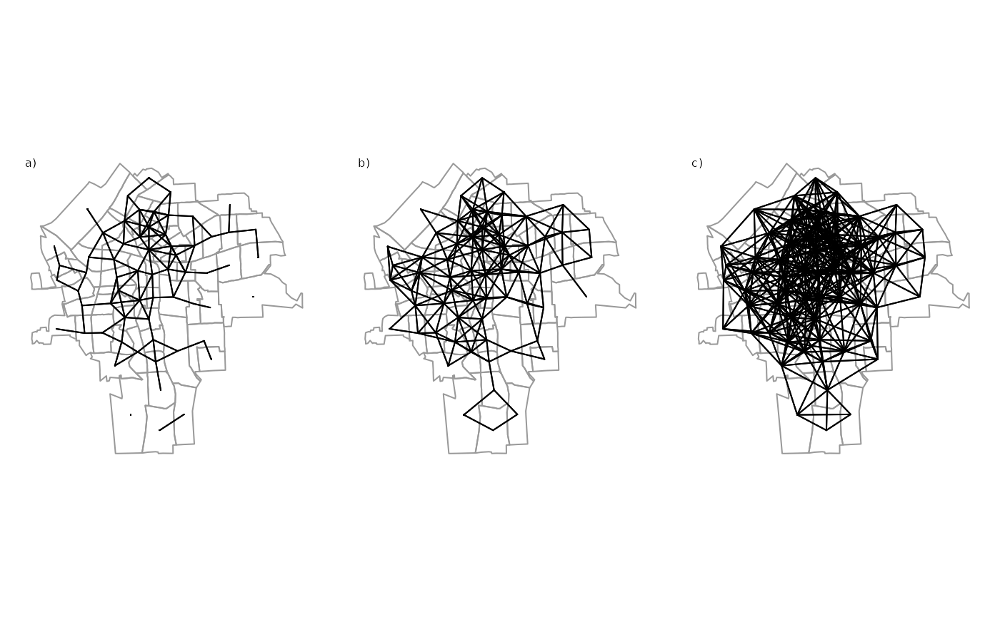
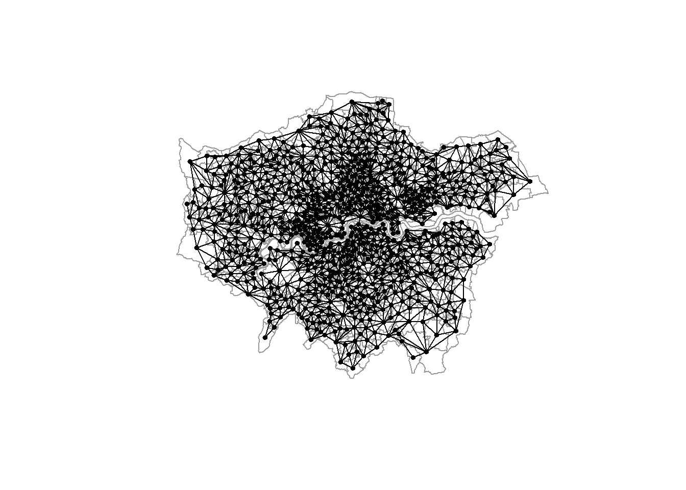
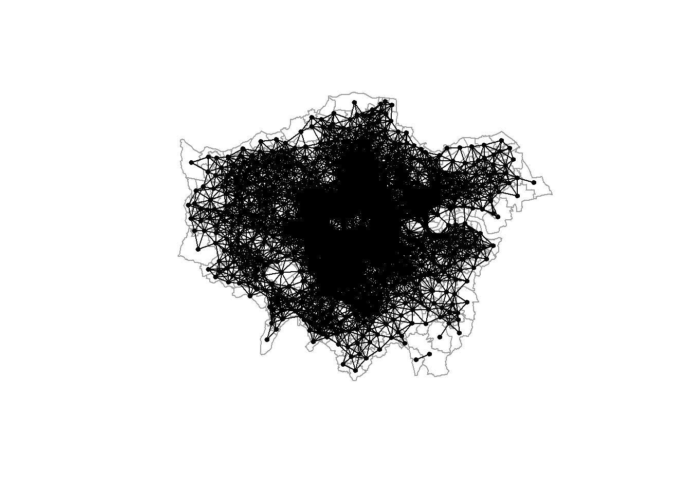
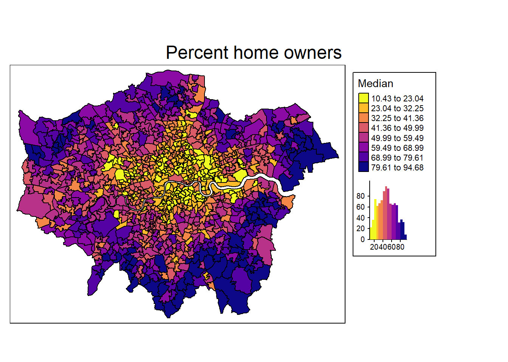
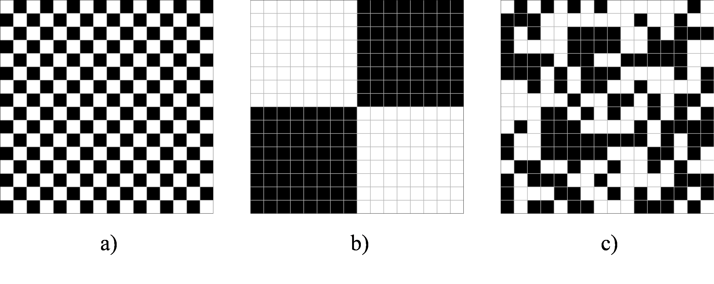
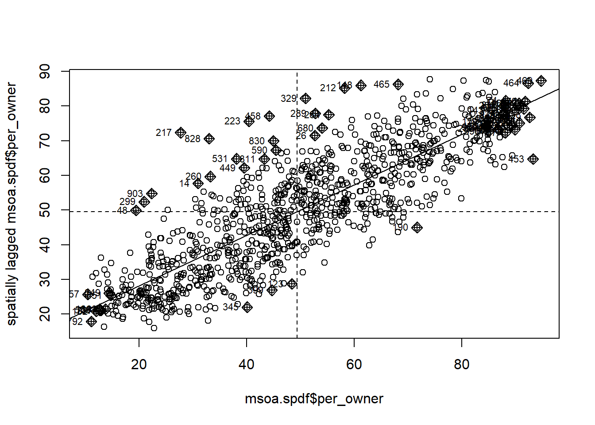
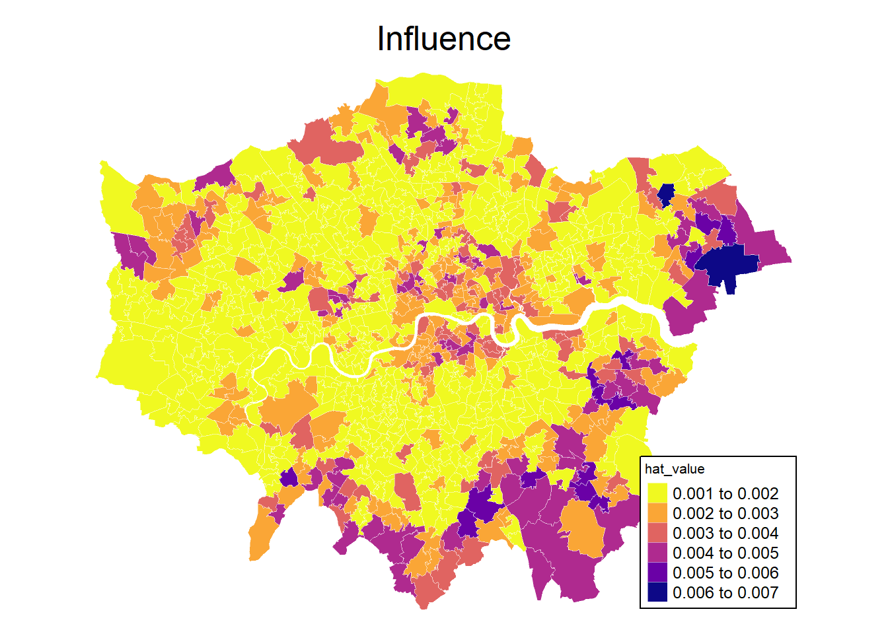
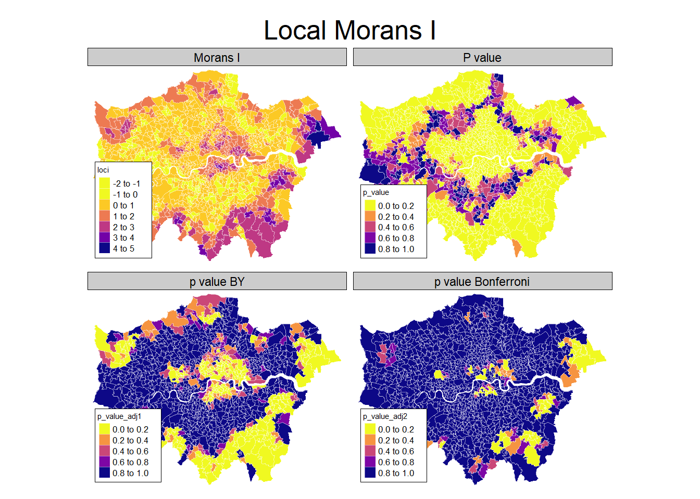
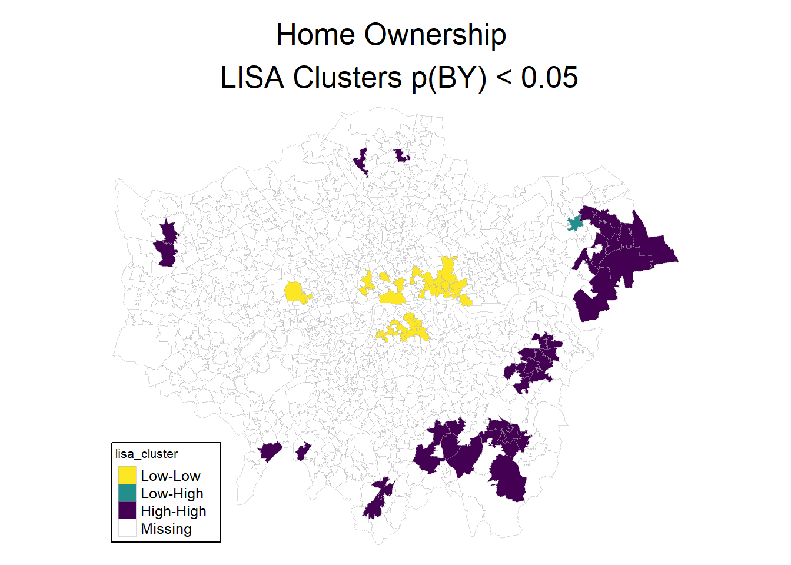
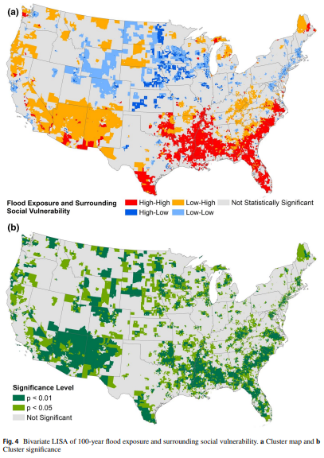

2 Spatial Relationships
Required packages
Session info
R version 4.3.1 (2023-06-16 ucrt)
Platform: x86_64-w64-mingw32/x64 (64-bit)
Running under: Windows 10 x64 (build 19044)
Matrix products: default
locale:
[1] LC_COLLATE=English_United Kingdom.utf8
[2] LC_CTYPE=English_United Kingdom.utf8
[3] LC_MONETARY=English_United Kingdom.utf8
[4] LC_NUMERIC=C
[5] LC_TIME=English_United Kingdom.utf8
time zone: Europe/Berlin
tzcode source: internal
attached base packages:
[1] stats graphics grDevices utils datasets methods
[7] base
other attached packages:
[1] viridisLite_0.4.2 tmap_3.3-3 spatialreg_1.2-9
[4] Matrix_1.5-4.1 spdep_1.2-8 spData_2.3.0
[7] mapview_2.11.0 sf_1.0-13
loaded via a namespace (and not attached):
[1] xfun_0.39 raster_3.6-23 htmlwidgets_1.6.2
[4] lattice_0.21-8 vctrs_0.6.3 tools_4.3.1
[7] crosstalk_1.2.0 LearnBayes_2.15.1 generics_0.1.3
[10] parallel_4.3.1 sandwich_3.0-2 stats4_4.3.1
[13] tibble_3.2.1 proxy_0.4-27 fansi_1.0.4
[16] pkgconfig_2.0.3 KernSmooth_2.23-21 satellite_1.0.4
[19] RColorBrewer_1.1-3 leaflet_2.1.2 webshot_0.5.5
[22] lifecycle_1.0.3 compiler_4.3.1 deldir_1.0-9
[25] munsell_0.5.0 terra_1.7-39 leafsync_0.1.0
[28] codetools_0.2-19 stars_0.6-1 htmltools_0.5.5
[31] class_7.3-22 pillar_1.9.0 MASS_7.3-60
[34] classInt_0.4-9 lwgeom_0.2-13 wk_0.7.3
[37] abind_1.4-5 boot_1.3-28.1 multcomp_1.4-25
[40] nlme_3.1-162 tidyselect_1.2.0 digest_0.6.32
[43] mvtnorm_1.2-2 dplyr_1.1.2 splines_4.3.1
[46] fastmap_1.1.1 grid_4.3.1 colorspace_2.1-0
[49] expm_0.999-7 cli_3.6.1 magrittr_2.0.3
[52] base64enc_0.1-3 dichromat_2.0-0.1 XML_3.99-0.14
[55] survival_3.5-5 utf8_1.2.3 TH.data_1.1-2
[58] leafem_0.2.0 e1071_1.7-13 scales_1.2.1
[61] sp_1.6-1 rmarkdown_2.23 zoo_1.8-12
[64] png_0.1-8 coda_0.19-4 evaluate_0.21
[67] knitr_1.43 tmaptools_3.1-1 s2_1.1.4
[70] rlang_1.1.1 Rcpp_1.0.10 glue_1.6.2
[73] DBI_1.1.3 rstudioapi_0.14 jsonlite_1.8.5
[76] R6_2.5.1 units_0.8-2 Reload data from pervious session
load("_data/msoa2_spatial.RData")2.1 Spatial interdependence
We can not only use coordinates and geo-spatial information to connect different data sources, we can also explicitly model spatial (inter)dependence in the analysis of our data. In many instance, accounting for spatial dependence might even be necessary to avoid biased point estimates and standard errors, as observations are often not independent and identically distributed.
Tobler’s first law of geography has been used extensively (11,584 citation in 2023-06) to describe spatial dependence: ‘Everything is related to everything else, but near things are more related than distant things’ (Tobler 1970).
Tobler’s first law is a bit of story
And it has been labeled as an excuse to not think too much about the reasons for spatial dependence or auto-correlation. For instance, measurement error, omitted variables, or inappropriate levels of aggregation are among reasons for auto-correlation (Pebesma and Bivand 2023).
We will come back to the reasons of spatial dependence. However, for now, we are interested in some tools to detect and analyse spatial relations.
To analyse spatial relations, we first need to define some sort of connectivity between units (e.g. similar to network analysis). There are some obvious candidates that be used to define these relations here: adjacency and proximity.
2.2 \(\boldsymbol{\mathbf{W}}\): Connectivity between units
The connectivity between units is usually represented in a matrix \(\boldsymbol{\mathbf{W}}\). There is an ongoing debate about the importance of spatial weights for spatial econometrics and about the right way to specify weights matrices (LeSage and Pace 2014; Neumayer and Plümper 2016). The following graph shows some possible options in how to define connectivity between units.

In spatial econometrics, the spatial connectivity (as shown above) is usually represented by a spatial weights matrix \({\boldsymbol{\mathbf{W}}}\): \[ \begin{equation} \boldsymbol{\mathbf{W}} = \begin{bmatrix} w_{11} & w_{12} & \dots & w_{1n} \\ w_{21} & w_{22} & \dots & w_{2n} \\ \vdots & \vdots & \ddots & \vdots \\ w_{n1} & w_{n2} & \dots & w_{nn} \end{bmatrix} \end{equation} \] The spatial weights matrix \(\boldsymbol{\mathbf{W}}\) is an \(N \times N\) dimensional matrix with elements \(w_{ij}\) specifying the relation or connectivity between each pair of units \(i\) and \(j\).
Note: The diagonal elements \(w_{i,i}= w_{1,1}, w_{2,2}, \dots, w_{n,n}\) of \(\boldsymbol{\mathbf{W}}\) are always zero. No unit is a neighbour of itself. This is not true for spatial multiplier matrices (as we will see later).
2.2.1 Contiguity weights
A very common type of spatial weights. Binary specification, taking the value 1 for neighbouring units (queens: sharing a common edge; rook: sharing a common border), and 0 otherwise.
Contiguity weights \(w_{i,j}\), where
\[\begin{equation} w_{i,j} = \begin{cases} 1 & \text{if $i$ and $j$ neighbours}\\ 0 & \text{otherwise} \end{cases} \end{equation}\]A contiguity weights matrix with three units, where unit 1 and unit 3 are neighbours, while unit 2 has no neighbours would look like this:
\[ \begin{equation} \boldsymbol{\mathbf{W}} = \begin{bmatrix} 0 & 0 & 1 \\ 0 & 0 & 0 \\ 1 & 0 & 0 \end{bmatrix} \nonumber \end{equation} \]
Sparse matrices
Problem of `island’: units without neighbours (if I calculate an average of their neigbours, would that be zero, or NA, or a mean?)
Lets create a contiguity weights matrix (Queens neighbours) for the London MSOAs: we create a neighbours list (nb) using poly2nb(), which is an efficient way of storing \({\boldsymbol{\mathbf{W}}}\). A snap of 1 meter accounts for potential lacks of accuracy between lines and points.
# Contiguity (Queens) neighbours weights
queens.nb <- poly2nb(msoa.spdf,
queen = TRUE, # a single shared boundary point meets the contiguity condition
snap = 1) # we consider points in 1m distance as 'touching'
summary(queens.nb)Neighbour list object:
Number of regions: 983
Number of nonzero links: 5648
Percentage nonzero weights: 0.5845042
Average number of links: 5.745677
Link number distribution:
2 3 4 5 6 7 8 9 10 11 12 13
9 39 130 264 273 169 66 19 5 6 2 1
9 least connected regions:
160 270 475 490 597 729 755 778 861 with 2 links
1 most connected region:
946 with 13 links# Lets plot that
plot(st_geometry(msoa.spdf), border = "grey60")
plot(queens.nb, st_centroid(st_geometry(msoa.spdf)),
add = TRUE, pch = 19, cex = 0.6)
# We can also transform this into a matrix W
W <- nb2mat(queens.nb, style = "B")
print(W[1:10, 1:10]) [,1] [,2] [,3] [,4] [,5] [,6] [,7] [,8] [,9] [,10]
1 0 0 0 0 0 0 0 0 0 0
2 0 0 1 0 0 0 0 0 0 0
3 0 1 0 0 1 0 0 0 0 0
4 0 0 0 0 0 1 0 0 0 1
5 0 0 1 0 0 1 1 0 0 0
6 0 0 0 1 1 0 1 0 1 1
7 0 0 0 0 1 1 0 1 1 0
8 0 0 0 0 0 0 1 0 0 0
9 0 0 0 0 0 1 1 0 0 1
10 0 0 0 1 0 1 0 0 1 0Among those first 10 units that you see above, which are the neighbours of unit number 6?
Why is the diagonal of this matrix all zero?
Overall, the matrix W has dimensions \(N \times N\), a row and a column for each observation. The value in a cell shows how units \(i\) (row number) and \(j\) (column number) are related to each other.
dim(W)[1] 983 983The row and column sums indicate the number of neighbours of each observation.
rowSums(W)[1:10] 1 2 3 4 5 6 7 8 9 10
11 6 7 5 5 6 6 6 6 5 colSums(W)[1:10] [1] 11 6 7 5 5 6 6 6 6 5Adjacency or graph-based neighbour’s weights matrices are usually symmetric. If unit 1 is a neighbour of unit 55, then unit 55 is also a neighbour of unit 1.
Your neighbours have neighbours too, and they are called higher (second) order neighbours. The neighbours of your neighbour’s neighbours are third order neighbours.
You can use nblag() to calculate higher order neighbour relations.
2.2.2 Distance based weights
Another common type uses the distance \(d_{ij}\) between each unit \(i\) and \(j\).
- Inverse distance weights \(w_{i,j} = \frac{1}{d_{ij}^\alpha}\), where \(\alpha\) define the strength of the spatial decay.
\[ \begin{equation} \boldsymbol{\mathbf{W}} = \begin{bmatrix} 0 & \frac{1}{d_{ij}^\alpha} & \frac{1}{d_{ij}^\alpha} \\ \frac{1}{d_{ij}^\alpha} & 0 & \frac{1}{d_{ij}^\alpha} \\ \frac{1}{d_{ij}^\alpha} & \frac{1}{d_{ij}^\alpha} & 0 \end{bmatrix} \nonumber \end{equation} \]
Dense matrices
Specifying thresholds may be useful (to get rid of very small non-zero weights)
For now, we will just specify a neighbours list with a distance threshold of 3km using dnearneigh(). An alternative would be k nearest neighbours using knearneigh(). We will do the inverse weighting later.
# Crease centroids
coords <- st_geometry(st_centroid(msoa.spdf))Warning: st_centroid assumes attributes are constant over
geometries# Neighbours within 3km distance
dist_3.nb <- dnearneigh(coords, d1 = 0, d2 = 3000)
summary(dist_3.nb)Neighbour list object:
Number of regions: 983
Number of nonzero links: 22086
Percentage nonzero weights: 2.285652
Average number of links: 22.46796
Link number distribution:
1 2 3 4 5 6 7 8 9 10 11 12 13 14 15 16 17 18 19 20 21 22
4 3 7 13 11 14 14 17 26 22 26 30 33 34 46 34 59 43 38 30 25 19
23 24 25 26 27 28 29 30 31 32 33 34 35 36 37 38 39 40 41 42 43 44
22 15 21 14 23 17 17 23 28 19 26 24 29 24 27 25 22 18 8 10 12 5
45 46 47
3 2 1
4 least connected regions:
158 160 463 959 with 1 link
1 most connected region:
545 with 47 links# Lets plot that
plot(st_geometry(msoa.spdf), border = "grey60")
plot(dist_3.nb, coords,
add = TRUE, pch = 19, cex = 0.6)
And you can see that the matrix is not so sparse anymore:
W2 <- nb2mat(dist_3.nb, style = "B")
W2[1:10, 1:10] [,1] [,2] [,3] [,4] [,5] [,6] [,7] [,8] [,9] [,10]
1 0 0 0 0 0 0 0 0 0 0
2 0 0 1 0 1 0 0 0 0 0
3 0 1 0 0 1 1 1 0 0 0
4 0 0 0 0 1 1 1 0 1 1
5 0 1 1 1 0 1 1 1 1 1
6 0 0 1 1 1 0 1 1 1 1
7 0 0 1 1 1 1 0 1 1 1
8 0 0 0 0 1 1 1 0 1 0
9 0 0 0 1 1 1 1 1 0 1
10 0 0 0 1 1 1 1 0 1 02.3 Normalization of \({\boldsymbol{\mathbf{W}}}\)
Normalizing ensures that the parameter space of the spatial multiplier is restricted to \(-1 < \rho > 1\), and the multiplier matrix is non-singular (don’t worry, more on this later).
The main message: Normalizing your weights matrix is always a good idea. Otherwise, the spatial parameters might blow up – if you can estimate the model at all. It also ensure easy interpretation of spillover effects.
Again, how to normalize a weights matrix is subject of debate (LeSage and Pace 2014; Neumayer and Plümper 2016).
2.3.1 Row-normalization
Row-normalization divides each non-zero weight by the sum of all weights of unit \(i\), which is the sum of the row.
\[ \frac{w_{ij}}{\sum_j^n w_{ij}} \]
With contiguity weights, spatially lagged variables contain mean of this variable among the neighbours of \(i\)
Proportions between units such as distances get lost (can be bad!)
Can induce asymmetries: \(w_{ij} \neq w_{ji}\)
For instance, we can use row-normalization for the Queens neighbours created above, and create a neighbours list with spatial weights.
queens.lw <- nb2listw(queens.nb,
style = "W") # W ist row-normalization
summary(queens.lw)Characteristics of weights list object:
Neighbour list object:
Number of regions: 983
Number of nonzero links: 5648
Percentage nonzero weights: 0.5845042
Average number of links: 5.745677
Link number distribution:
2 3 4 5 6 7 8 9 10 11 12 13
9 39 130 264 273 169 66 19 5 6 2 1
9 least connected regions:
160 270 475 490 597 729 755 778 861 with 2 links
1 most connected region:
946 with 13 links
Weights style: W
Weights constants summary:
n nn S0 S1 S2
W 983 966289 983 355.1333 4017.47To see what happened, let’s look at our example in matrix format again.
# transform into matrix with row-normalization
W_norm <- nb2mat(queens.nb, style = "W")
print(W_norm[1:10, 1:10]) [,1] [,2] [,3] [,4] [,5] [,6] [,7]
1 0 0.0000000 0.0000000 0.0000000 0.0000000 0.0000000 0.0000000
2 0 0.0000000 0.1666667 0.0000000 0.0000000 0.0000000 0.0000000
3 0 0.1428571 0.0000000 0.0000000 0.1428571 0.0000000 0.0000000
4 0 0.0000000 0.0000000 0.0000000 0.0000000 0.2000000 0.0000000
5 0 0.0000000 0.2000000 0.0000000 0.0000000 0.2000000 0.2000000
6 0 0.0000000 0.0000000 0.1666667 0.1666667 0.0000000 0.1666667
7 0 0.0000000 0.0000000 0.0000000 0.1666667 0.1666667 0.0000000
8 0 0.0000000 0.0000000 0.0000000 0.0000000 0.0000000 0.1666667
9 0 0.0000000 0.0000000 0.0000000 0.0000000 0.1666667 0.1666667
10 0 0.0000000 0.0000000 0.2000000 0.0000000 0.2000000 0.0000000
[,8] [,9] [,10]
1 0.0000000 0.0000000 0.0000000
2 0.0000000 0.0000000 0.0000000
3 0.0000000 0.0000000 0.0000000
4 0.0000000 0.0000000 0.2000000
5 0.0000000 0.0000000 0.0000000
6 0.0000000 0.1666667 0.1666667
7 0.1666667 0.1666667 0.0000000
8 0.0000000 0.0000000 0.0000000
9 0.0000000 0.0000000 0.1666667
10 0.0000000 0.2000000 0.0000000Overall, how many neighbours does unit 9 have (including all columns)? How do you know?
rowSums(W)[9]We can also use the nb object to see which ones the neighbours are. Here, for instance, neighbours of unit 6:
queens.nb[6][[1]]
[1] 4 5 7 9 10 462This fits to what we see in the matrix above.
Note that row-normalization has some undesirable properties when we use some non-contigutiy based neighbour relations, such as distance based neighbours.
The problem: It obscures the proportion due to dividing by a row-specific value.
Let’s construct a hypothetical example
# Subset of 5 units
sub.spdf <- msoa.spdf[c(4, 5, 6, 102, 150), ]
mapview(sub.spdf)We construct the inverse-distance weighted 2 nearest neighbors.
# 2 closest neighbours
sub.coords <- st_geometry(st_centroid(sub.spdf))Warning: st_centroid assumes attributes are constant over
geometriesknn.nb <- knearneigh(sub.coords,
k = 2) # number of nearest neighboursWarning in knearneigh(sub.coords, k = 2): k greater than one-third
of the number of data pointsknn.nb <- knn2nb(knn.nb)
summary(knn.nb)Neighbour list object:
Number of regions: 5
Number of nonzero links: 10
Percentage nonzero weights: 40
Average number of links: 2
Non-symmetric neighbours list
Link number distribution:
2
5
5 least connected regions:
1 2 3 4 5 with 2 links
5 most connected regions:
1 2 3 4 5 with 2 links# listw with inverse-distance based weights
sub.lw <- nb2listwdist(knn.nb,
x = sub.coords, # needed for idw
type = "idw", # inverse distance weighting
alpha = 1, # the decay parameter for distance weighting
style = "raw") # without normalization
W_sub <- listw2mat(sub.lw)
formatC(W_sub, format = "f", digits = 6) [,1] [,2] [,3] [,4] [,5]
1 "0.000000" "0.000414" "0.000723" "0.000000" "0.000000"
2 "0.000414" "0.000000" "0.000962" "0.000000" "0.000000"
3 "0.000723" "0.000962" "0.000000" "0.000000" "0.000000"
4 "0.000000" "0.000033" "0.000032" "0.000000" "0.000000"
5 "0.000049" "0.000000" "0.000049" "0.000000" "0.000000"As you can see, units 1, 2, 3 have relatively proximate neighbours (.e.g inverse distance 0.000962: 3 zeros). Units 4 and 5, in contrast, have only very distant neighbours (e.g. inverse distance 0.000049: 4 zeros).
Now, see what happens when we use row-normalization.
sub.lw <- nb2listwdist(knn.nb,
x = sub.coords, # needed for idw
type = "idw", # inverse distance weighting
alpha = 1, # the decay parameter for distance weighting
style = "W") # for row normalization
W_sub <- listw2mat(sub.lw)
formatC(W_sub, format = "f", digits = 6) [,1] [,2] [,3] [,4] [,5]
1 "0.000000" "0.364083" "0.635917" "0.000000" "0.000000"
2 "0.300879" "0.000000" "0.699121" "0.000000" "0.000000"
3 "0.429123" "0.570877" "0.000000" "0.000000" "0.000000"
4 "0.000000" "0.507955" "0.492045" "0.000000" "0.000000"
5 "0.499360" "0.000000" "0.500640" "0.000000" "0.000000"All rows sum up to 1, but the strength of the relation is now similar for the distant units 4 and 5, and the proximate units 1, 2, 3.
2.3.2 Maximum eigenvalues normalization
Maximum eigenvalues normalization divides each non-zero weight by the overall maximum eigenvalue \(\lambda_{max}\). Each element of \(\boldsymbol{\mathbf{W}}\) is divided by the same scalar parameter, which preserves the relations.
\[ \frac{\boldsymbol{\mathbf{W}}}{\lambda_{max}} \]
Interpretation may become more complicated
Keeps proportions of connectivity strengths across units (relevant esp. for distance based \(\boldsymbol{\mathbf{W}}\))
We use eigenvalue normalization for the inverse distance neighbours. We use nb2listwdist() to create weight inverse distance based weights and normalize in one step.
coords <- st_geometry(st_centroid(msoa.spdf))Warning: st_centroid assumes attributes are constant over
geometriesidw.lw <- nb2listwdist(dist_3.nb,
x = coords, # needed for idw
type = "idw", # inverse distance weighting
alpha = 1, # the decay parameter for distance weighting
style = "minmax") # for eigenvalue normalization
summary(idw.lw)Characteristics of weights list object:
Neighbour list object:
Number of regions: 983
Number of nonzero links: 22086
Percentage nonzero weights: 2.285652
Average number of links: 22.46796
Link number distribution:
1 2 3 4 5 6 7 8 9 10 11 12 13 14 15 16 17 18 19 20 21 22
4 3 7 13 11 14 14 17 26 22 26 30 33 34 46 34 59 43 38 30 25 19
23 24 25 26 27 28 29 30 31 32 33 34 35 36 37 38 39 40 41 42 43 44
22 15 21 14 23 17 17 23 28 19 26 24 29 24 27 25 22 18 8 10 12 5
45 46 47
3 2 1
4 least connected regions:
158 160 463 959 with 1 link
1 most connected region:
545 with 47 links
Weights style: minmax
Weights constants summary:
n nn S0 S1 S2
minmax 983 966289 463.6269 23.92505 1117.636Examples from above: See how this keeps the proportions in our example. Instead of transforming values to sum up to 1 in each row, we now have much smaller values for 4 and 5 then we have for the proximate units 1, 2, 3.
sub.lw <- nb2listwdist(knn.nb,
x = sub.coords, # needed for idw
type = "idw", # inverse distance weighting
alpha = 1, # the decay parameter for distance weighting
style = "minmax") # for eigenvalue normalization
W_sub <- listw2mat(sub.lw)
formatC(W_sub, format = "f", digits = 6) [,1] [,2] [,3] [,4] [,5]
1 "0.000000" "0.245687" "0.429123" "0.000000" "0.000000"
2 "0.245687" "0.000000" "0.570877" "0.000000" "0.000000"
3 "0.429123" "0.570877" "0.000000" "0.000000" "0.000000"
4 "0.000000" "0.019663" "0.019047" "0.000000" "0.000000"
5 "0.029099" "0.000000" "0.029174" "0.000000" "0.000000"2.4 Islands / missings
In practice, we often have a problem with islands. If we use contiguity based or distance based neighbour definitions, some units may end up with empty neighbours sets: they just do not touch any other unit and do not have a neighbour within a specific distance. This however creates a problem: what is the value in the neighbouring units?
The zero.policy option in spdep allows to proceed with empty neighbours sets. However, many further functions may run into problems and return errors. It often makes sense to either drop islands, to choose weights which always have neighbours (e.g. k nearest), or impute empty neighbours sets by using the nearest neighbours.
2.5 Global Autocorrelation
If spatially close observations are more likely to exhibit similar values, we cannot handle observations as if they were independent.
\[ \mathrm{E}(\varepsilon_i\varepsilon_j)\neq \mathrm{E}(\varepsilon_i)\mathrm{E}(\varepsilon_j) = 0 \]
This violates a basic assumption of the conventional OLS model. We will talk more about whether that is good or bad (any guess?).
2.5.1 Visualization
There is one very easy and intuitive way of detecting spatial autocorrelation: Just look at the map. We do so by using tmap for plotting the share of home owners.
mp1 <- tm_shape(msoa.spdf) +
tm_fill(col = "per_owner",
#style = "cont",
style = "fisher", n = 8,
title = "Median",
palette = viridis(n = 8, direction = -1, option = "C"),
legend.hist = TRUE) +
tm_borders(col = "black", lwd = 1) +
tm_layout(legend.frame = TRUE, legend.bg.color = TRUE,
#legend.position = c("right", "bottom"),
legend.outside = TRUE,
main.title = "Percent home owners",
main.title.position = "center",
title.snap.to.legend = TRUE)
mp1 
We definitely see some clusters with spatial units having a low share of home owner (e.g. in the city center), and other clusters where home ownership is high (e.g. suburbs in the south and east, such as Bromley or Havering).
However, this is (to some degree) dependent on how we define cutoffs and coloring of the map: the Modifiable Areal Unit Problem (Wong 2009).
Which of the following three checkerboards has no (or the lowest) autocorrelation?

Would your answer be the same if we would aggregate the data to four larger areas / districts using the average within each of the four districts?
2.5.2 Moran’s I
The most common and well known statistic for spatial dependence or autocorrelation is Moran’s I, which goes back to Moran (1950) and Cliff and Ord (1972). For more extensive materials on Moran’s I see for instance Kelejian and Piras (2017), Chapter 11.
To calculate Moran’s I, we first define a neighbours weights matrix W.
Global Moran’s I test statistic: \[ \begin{equation} \boldsymbol{\mathbf{I}} = \frac{N}{S_0} \frac{\sum_i\sum_j w_{ij}(y_i-\bar{y})(y_j-\bar{y})} {\sum_i (y_i-\bar{y})^2}, \text{where } S_0 = \sum_{i=1}^N\sum_{j=1}^N w_{ij} \end{equation} \] It is often written with deviations \(z\)
\[ \begin{equation} \boldsymbol{\mathbf{I}} = \frac{N}{S_0} \frac{\sum_i\sum_j w_{ij}(z_i)(z_j)} {\sum_i (z_i)^2}, \text{where } S_0 = \sum_{i=1}^N\sum_{j=1}^N w_{ij} \end{equation} \]
Note that in the case of row-standardized weights, \(S_0 = N\). The \(I\) can be interpreted as: Relation of the deviation from the mean value between unit \(i\) and neighbours of unit \(i\). Basically, this measures correlation between neighbouring values.
Negative values: negative autocorrelation
Around zero: no autocorrelation
Positive values: positive autocorrelation
To calculate Moran’s I, we first need to define the relationship between units. As in the previous example, we define contiguity weights and distance-based weights.
# Contiguity (Queens) neighbours weights
queens.nb <- poly2nb(msoa.spdf,
queen = TRUE,
snap = 1) # we consider points in 1m distance as 'touching'
queens.lw <- nb2listw(queens.nb,
style = "W")
# Neighbours within 3km distance
coords <- st_geometry(st_centroid(msoa.spdf))Warning: st_centroid assumes attributes are constant over
geometriesdist_3.nb <- dnearneigh(coords,
d1 = 0, d2 = 3000)
idw.lw <- nb2listwdist(dist_3.nb,
x = coords, # needed for idw
type = "idw", # inverse distance weighting
alpha = 1, # the decay parameter for distance weighting
style = "minmax") # for eigenvalue normalizationSubsequently, we can calculate the average correlation between neighbouring units.
For contiguity weights, we get:
# Global Morans I test of housing values based on contiguity weights
moran.test(msoa.spdf$per_owner, listw = queens.lw, alternative = "two.sided")
Moran I test under randomisation
data: msoa.spdf$per_owner
weights: queens.lw
Moran I statistic standard deviate = 38.161, p-value <
2.2e-16
alternative hypothesis: two.sided
sample estimates:
Moran I statistic Expectation Variance
0.728706855 -0.001018330 0.000365663 And for inverse distance weighting, we get:
# Global Morans I test of housing values based on idw
moran.test(msoa.spdf$per_owner, listw = idw.lw, alternative = "two.sided")
Moran I test under randomisation
data: msoa.spdf$per_owner
weights: idw.lw
Moran I statistic standard deviate = 65.853, p-value <
2.2e-16
alternative hypothesis: two.sided
sample estimates:
Moran I statistic Expectation Variance
0.6838957350 -0.0010183299 0.0001081719 Interpretation: In both cases, we have very strong autocorrelation between neighbouring/closer units (~.7). It barely matters which of the weights matrices we use. This autocorrelation is highly significant. we can thus reject the Null that units are independent of each other (at least at this spatial level and for the share of home owners).
2.5.3 Residual-based Moran’s I
We can also use the same Moran’s I test to inspect spatial autocorrelation in residuals from an estimated linear model.
Let’s start with an intercept only model.
lm0 <- lm(per_owner ~ 1, msoa.spdf)
lm.morantest(lm0, listw = queens.lw, alternative = "two.sided")
Global Moran I for regression residuals
data:
model: lm(formula = per_owner ~ 1, data = msoa.spdf)
weights: queens.lw
Moran I statistic standard deviate = 38.177, p-value <
2.2e-16
alternative hypothesis: two.sided
sample estimates:
Observed Moran I Expectation Variance
0.7287068548 -0.0010183299 0.0003653613 This is exactly what we have received in the general case of Moran’s I.
Now, lets add some predictors. For instance, the distance to the city centre, and the population density may be strongly related to the home ownership rates and explain parts of the spatial dependence.
### Distance to city center
# Define centre
centre <- st_as_sf(data.frame(lon = -0.128120855701165,
lat = 51.50725909644806),
coords = c("lon", "lat"),
crs = 4326)
# Reproject
centre <- st_transform(centre, crs = st_crs(msoa.spdf))
# Calculate distance
msoa.spdf$dist_centre <- as.numeric(st_distance(msoa.spdf, centre)) / 1000
# hist(msoa.spdf$dist_centre)
### Run model with predictors
lm1 <- lm(per_owner ~ dist_centre + POPDEN, msoa.spdf)
lm.morantest(lm1, listw = queens.lw, alternative = "two.sided")
Global Moran I for regression residuals
data:
model: lm(formula = per_owner ~ dist_centre + POPDEN, data =
msoa.spdf)
weights: queens.lw
Moran I statistic standard deviate = 22.674, p-value <
2.2e-16
alternative hypothesis: two.sided
sample estimates:
Observed Moran I Expectation Variance
0.4298146060 -0.0024065617 0.0003633607 There is still considerable auto-correlation in the residuals. However, we have reduce it by a substantial amount with two very simple control variables.
2.6 Local Autocorrelation
The Global Moran’s I statistic above summarizes the spatial pattern by a single value. Although this is helpful to get a feeling of the strength of the general spatial association, it is often more helpful to inspect the spatial pattern in more detail.
The most prominent measure is the Local Indicators of Spatial Association (LISA) (Anselin 1995). LISA measures assess the importance and significance of a satistic at different spatial locations. For more information see for instance the GeoData Materials by Luc Anselin.
For instance, we can use the Moran Plot to identify how single (pairs of) units contribute to the overall dependence.
mp <- moran.plot(msoa.spdf$per_owner, queens.lw)
In the lower left corner, we see units with a low-low share of home ownership: focal and neighbouring units have a low share of home owners. In the top right corner, by contrast, we see high-high units.
And we can plot influence values on the Overall Moran statistic.
msoa.spdf$hat_value <- mp$hat
mp1 <- tm_shape(msoa.spdf) +
tm_fill(col = "hat_value",
palette = viridis(n = 10, direction = -1, option = "C"),
) +
tm_borders(col = "white", lwd = 0.5, alpha = 0.5) +
tm_layout(frame = FALSE,
legend.frame = TRUE, legend.bg.color = TRUE,
legend.position = c("right", "bottom"),
legend.outside = FALSE,
main.title = "Influence",
main.title.position = "center",
main.title.size = 1.6,
legend.title.size = 0.8,
legend.text.size = 0.8)
mp1
2.7 Local Moran’s I
Local Moran’s I is a local version of the overall Moran’s I to identify local clusters and local spatial outliers (Anselin 1995). The Local Moran’s I is just a local version which is calculated for each location:
\[
\begin{equation}
\boldsymbol{\mathbf{I}}_i =
\frac{z_i \sum_j w_{ij}z_j}
{\sum_i (z_i)^2 / (n-1)}, \text{where }
\end{equation}
\] We use the unfction localmoran() to calculate the local test statistic .
loci <- localmoran(msoa.spdf$per_owner, listw = queens.lw)
head(loci) Ii E.Ii Var.Ii Z.Ii Pr(z != E(Ii))
1 0.42322928 -1.285364e-04 0.011367934 3.9706976 7.166249e-05
2 -0.12775982 -2.229957e-05 0.003634711 -2.1187688 3.411001e-02
3 0.38111534 -6.569549e-04 0.091630752 1.2611995 2.072370e-01
4 1.02874685 -1.428679e-03 0.279333375 1.9491704 5.127507e-02
5 0.08553291 -2.108521e-04 0.041275789 0.4220412 6.729949e-01
6 -0.24014505 -2.228818e-04 0.036321252 -1.2588964 2.080678e-01It also has an attribute with the Moran plot quadrant of each observation.
mean median pysal
1 Low-Low Low-Low Low-Low
2 Low-High Low-High Low-High
3 High-High High-High High-High
4 High-High High-High High-High
5 High-High High-High High-High
6 Low-High Low-High Low-HighThis returns a data.frame with local moran statisic, the expectation of local moran statistic, its variance, and a p value for the satistical significance of each unit. Note that we obviously have a problem of multiple comparisons here and thus may want to correct the significance level, e.g. by Bonferroni adjustment (R. Bivand and Wong 2018).
mp1 <- tm_shape(msoa.spdf) +
tm_fill(col = c("loci", "p_value", "p_value_adj1", "p_value_adj2"),
palette = viridis(n = 10, direction = -1, option = "C"),
) +
tm_borders(col = "white", lwd = 0.5, alpha = 0.5) +
tm_layout(frame = FALSE,
legend.frame = TRUE, legend.bg.color = TRUE,
legend.position = c("left", "bottom"),
legend.outside = FALSE,
main.title = "Local Morans I",
main.title.position = "center",
main.title.size = 1.6,
legend.title.size = 0.8,
legend.text.size = 0.8,
panel.labels = c("Morans I",
"P value",
"p value BY",
"p value Bonferroni"))
mp1
Something you can often see are so called LISA hotspot maps. They are based on the same idea as the moran plot, and show cluster of high-high and low-low values. We can use the hotspot function to identify the clusters, with a cutoff for singificance and the adjustment for multiple testing.
# Calculate clusters
msoa.spdf$lisa_cluster <- hotspot(loci,
"Pr(z != E(Ii))",
cutoff = 0.05,
quadrant.type = "mean",
p.adjust = "BY")
# Map
mp1 <- tm_shape(msoa.spdf) +
tm_fill(col = c("lisa_cluster"),
palette = viridis(n = 3, direction = -1, option = "D"),
colorNA = "white") +
tm_borders(col = "grey70", lwd = 0.5, alpha = 0.5) +
tm_layout(frame = FALSE,
legend.frame = TRUE, legend.bg.color = TRUE,
legend.position = c("left", "bottom"),
legend.outside = FALSE,
main.title = "Home Ownership \n LISA Clusters p(BY) < 0.05",
main.title.position = "center",
main.title.size = 1.6,
legend.title.size = 0.8,
legend.text.size = 0.8,)
mp1
Note that it is not suggested to interpret those cluster as significant in the strict statistical sense. Pebesma and Bivand (2023) suggest to speak of interesting clusters. After all, this is an explorative approach. Nevertheless, it can help to identify spatial patterns and clusters.
There are more ways of calculating these hotspot maps and more choices on the cutoffs and calculation of the statistical significance. For more materials see Chapter 15 of Pebesma and Bivand (2023).
2.8 Example
Tate.2021
This study explores the geography of flood exposure and social vulnerability in the conterminous United States based on spatial analysis of fluvial and pluvial flood extent, land cover, and social vulnerability.
Mobile homes and racial minorities are most overrepresented in hotspots compared to elsewhere. The results identify priority locations where interventions can mitigate both physical and social aspects of flood vulnerability.
